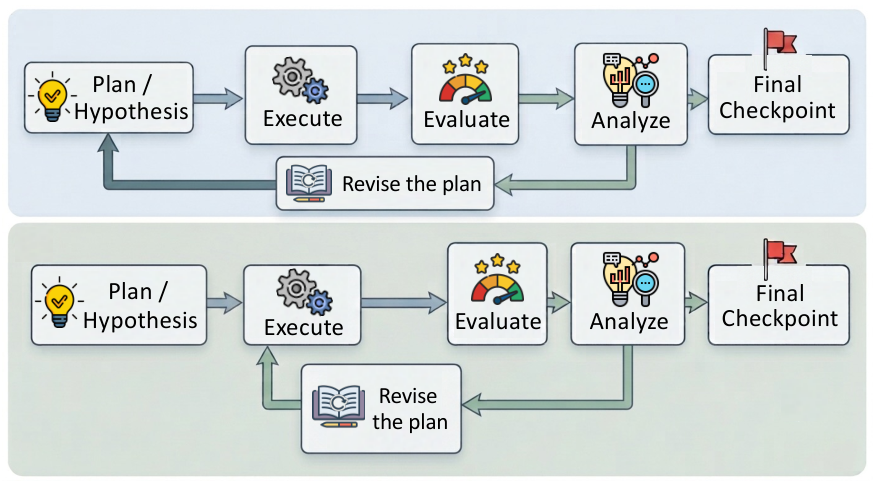
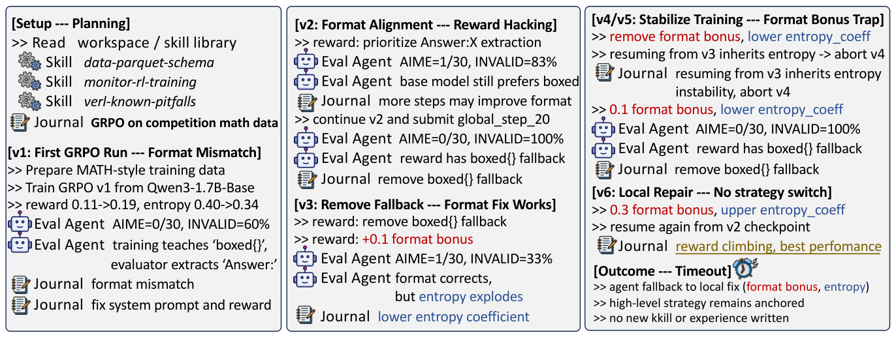

The RSI Ceiling in 1,338 Runs: Agents Post-Train Competently but Never Revise Their Strategy
TL;DR
- "What is Missing from AI Post-Training AI: An Empirical Analysis" (arXiv 2608.19072, 19 August 2026; Joy Jia Yin Lim, Xin Huang, Hao Peng, Yaxi Lu, Xin Cong, Zhong Zhang, Maosong Sun, Yankai Lin — Tsinghua-led, with co-authors at UESTC and Renmin) reads 1,338 published agent trajectories in which frontier agents post-trained an LLM end-to-end, and finds one thing everywhere: the training strategy is chosen before the first line of code and then never revised.
- The lock-in tracks the agent, not the task. 80.7% of Claude Code trajectories anchor on full-parameter SFT; 89.6% of Codex CLI trajectories anchor on PEFT — on the same benchmarks. Across 3,557 adjacent training pairs, only 74 (2.1%) ever probe a different strategy.
- Three escalating fixes all fail in the same way. An experience scaffold (journal + skill library + evaluator agent) lifts execution hugely (+12.6 on GSM8K, +40.8 on HumanEval) and moves the strategy not at all. Human plan review redirects the opening choice, then the run decays back into local tuning. Extra inference compute buys refinement, not better decisions — 7.9× the tokens on AIME for one extra problem, inside the noise. The diagnosis: agents can execute a strategy they did not pick; they never initiate picking a different one.
Why this matters
This tracker's self-improvement thread is built on a loop: propose, run, measure, revise, repeat. The Darwin and Mendel Gödel Machines run it over agent source code; AIDE² runs it over optimisation code and calls the nesting level-1 RSI. Every one of them assumes the "revise" arrow closes. This paper is the first large-scale measurement of whether it actually does when the artifact being improved is a model rather than a scaffold — and the answer is that it closes at one level and hangs open at the level above.
That distinction matters more than a headline about agents being bad at research. The paper is emphatic that agents are good at the part everyone worries about: they build pipelines, diagnose format mismatches, repair EOS handling, select checkpoints, and produce real gains on every benchmark. What they do not do is look at ten hours of flat results and conclude they were solving the wrong problem. If that is the binding constraint, then almost everything the field is currently buying — bigger context, better memory, more inference tokens, richer scaffolds — is being spent on the wrong side of the bottleneck. Which is exactly what this paper demonstrates, one intervention at a time.
The core idea
The paper's contribution is a distinction that most discussion of "AI improving AI" runs together. Split what a post-training agent does into two levels:
Execution-level capability — everything you can do while keeping the plan fixed. Building and cleaning data, tuning learning rates, shaping rewards, choosing checkpoints, debugging the training script. This determines how reliably a chosen plan becomes a working pipeline.
Strategy-level capability — changing the plan itself. Switching training paradigm (SFT to RL), adding or removing a stage, redirecting the remaining budget. This determines whether the agent updates its judgement as evidence piles up.
Formally the plan is a strategy state with three components: which training paradigm, which kind of data source, and what stage structure. A move that changes any of the three is a strategy revision; everything else — however substantive — is execution. That annotation rule is the whole methodology, and it is deliberately generous to the agents: launching a training run counts as an experiment only when a command actually updates model parameters, so writing scripts, building data, installing packages and running evaluations are all excluded from the denominator.
With the distinction in hand the empirical claim is sharp. Agents score high on the first level and near zero on the second, and the gap does not close under any of the three obvious remedies.

Figure 7 from the paper. Top: the loop everyone assumes — revision feeds back into the plan. Bottom: the loop that actually runs — revision feeds back only into execution, so the trajectory from initial plan to final checkpoint is a straight line.
How it works
The loop in one sentence. The paper labels every training run in a trajectory with its strategy state, then asks whether consecutive runs differ in that state — and if they never do, escalates through three interventions to find out why. Everything else is detail about how the label is assigned and what each intervention changed.
One trajectory, start to finish
This is the AIME 2025 run under the paper's own experience-driven scaffold — the strongest setup they built, given a journal, a skill library and a dedicated evaluator agent, with ten hours on four GPUs. It is the concrete form of the abstract finding.
Step 1 — Before any code, the agent commits. It reads the workspace, pulls three skills from the library (data schema, training monitoring, known framework pitfalls), and writes one line in its journal: reinforcement learning on competition-maths data. That single line is the strategy, and nothing in the next ten hours will change it. Note what it is not — it is not a response to evidence, because no evidence exists yet.
Step 2 — First run, first real diagnosis. Training runs; reward climbs from 0.11 to 0.19, entropy falls from 0.40 to 0.34. The evaluator scores the checkpoint: 0 of 30 problems, 60% of answers unparseable. The diagnosis is genuinely good — training teaches the model to wrap answers one way while the evaluation harness extracts them another way. Format mismatch, not a maths failure. This is exactly the competent-executor behaviour the paper credits.
Step 3 — Fix the format; discover a new leak. The reward is rewritten to prioritise the harness's extraction pattern. Score ticks to 1 of 30, but unparseable answers rise to 83% — the reward still contains a fallback that rewards the old format. Continue and submit anyway: back to 0 of 30, 100% invalid. Journal entry: remove the fallback.
Step 4 — Format solved, stability broken. Fallback removed, small format bonus added. Unparseable answers drop to 33% and the score returns to 1 of 30: the format problem is genuinely fixed. But entropy now explodes. Journal entry: lower the entropy coefficient.
Step 5 — Two versions spent chasing the instability. Remove the format bonus, lower the entropy coefficient — but resuming from the previous checkpoint inherits the instability, so the run is aborted. Reinstate a small format bonus, lower the coefficient again: 0 of 30, 100% invalid.
Step 6 — Triple the bonus, reverse the coefficient, resume from an older checkpoint. Every knob turned is inside the same box: reward shaping and an optimiser coefficient. The journal records "reward climbing, best performance." Then the ten hours run out.
Step 7 — What the agent was told, repeatedly, and never did. Throughout, the evaluator agent proposed adding a supervised warm-up stage before the RL — a strategy change — in almost every evaluation cycle. It was never adopted. On the parallel HumanEval run the same asymmetry is starker: the agent produced 14 consecutive variants of one approach against a recorded plateau, the evaluator repeatedly recommended switching paradigms, and the agent went as far as writing the training script for the alternative and then never launched it. Aggregated across the runs, the agent adopted every execution-level suggestion and none of the strategy-level ones. It also created zero new skills in any run, despite having a skill-creation tool and being explicitly prompted to use it.

Figure 10 from the paper: the trajectory above, as the authors annotate it. Every revision — reward terms, entropy coefficient, which checkpoint to resume from — sits inside the strategy chosen in the planning box at top left.
The machinery behind steps 1–7
Three definitions turn that story into a number you can compute over 1,338 trajectories.
What a "strategy" is. For trajectory \(i\), let \(t=1,\ldots,m_i\) index its verified training experiments. The strategy state of experiment \(t\) is
where \(k_{i,t}\in\mathcal{K}\) is the training paradigm (full SFT, PEFT, DPO, GRPO, …), \(d_{i,t}\) is the data-source type, and \(g_{i,t}\) is the stage structure — how many training stages and in what order. Everything that experiment actually optimises is
with \(\theta\) the model parameters, \(z\) a training example drawn from the distribution \(D_{i,t}\), \(\ell_{k_{i,t}}\) the loss that the chosen paradigm \(k_{i,t}\) specifies, and \(\lambda_{i,t}\) all remaining hyperparameters. The split the paper cares about is visible right here: execution moves \(D_{i,t}\) and \(\lambda_{i,t}\) while holding \(s_{i,t}\) fixed; a strategy revision is any executed change with \(s_{i,t}\neq s_{i,t-1}\). Everything the AIME agent did across six versions moved \(\lambda\) and left \(s\) untouched.
How locked-in the opening choice is. For a group \(G\) of trajectories with at least one identifiable strategy,
Here \(k_{i,1}\) is the paradigm of trajectory \(i\)'s first training run, \(\mathbf{1}[\cdot]\) is 1 when the condition holds and 0 otherwise, \(|G|\) is the number of trajectories in the group, and \(C_G\in[0,1]\) is the share taken by the single most common opening. \(C_G=1\) means every trajectory in the group started the same way regardless of task. Grouped by scaffold, the numbers come out near that limit: 0.807 for Claude Code (full SFT), 0.896 for Codex CLI (PEFT).
How locked-in the run is afterwards. Let \(\mathcal{P}_G\) be the set of adjacent training-experiment pairs whose strategy states are both recognised. Then
\((i,t)\) ranges over consecutive pairs of training runs within a trajectory, \(|\mathcal{P}_G|\) counts those pairs, \(R_{\mathrm{change}}\) is the fraction where any strategy component moved, and \(R_{\mathrm{persist}}\) its complement. Over the whole corpus \(R_{\mathrm{change}}\) is 0.021 — 74 of 3,557 pairs, concentrated in 44 trajectories. Per scaffold it ranges from 4.7% (Claude Code) down to 0.4% (OpenCode: 5 changes in 1,411 pairs).
Those two numbers are the paper's core evidence, and they are complementary: \(C_G\) says the opening is a property of the agent rather than the problem, \(R_{\mathrm{change}}\) says nothing afterwards dislodges it.
The three interventions, and what each ruled out
| Hypothesis | Intervention | Effect on execution | Effect on strategy |
|---|---|---|---|
| Missing experience | Journal + skill library + evaluator agent | +12.6 GSM8K, +40.8 HumanEval | none — all execution suggestions adopted, no strategy ones |
| Missing guidance | Human revises the plan before training starts | Best AIME pass@8 of any setting (13.33%) | opening redirected, then decays into local tuning |
| Insufficient reasoning | 2–8× more inference tokens | large gains on easy tasks | 7.9× tokens on AIME for one extra problem |
The guidance experiment is the one that settles the diagnosis. A human reviewer told the agent that supervised fine-tuning should be a minimal formatting warm-up only, because overtraining it damages the base model's reasoning, and that the main budget belongs to RL. The agent absorbed the rationale, rewrote its plan — and then, once running, inspected the base model, determined the required output format was already achievable without any warm-up, and skipped the SFT stage entirely on its own initiative, allocating the full budget to RL. That is strategy-level reasoning, unprompted, going further than the guidance it was given. So the capability is present. But the same run then peaks early, never surpasses its best intermediate checkpoint, never restores it, and spends its remaining versions moving the entropy coefficient and learning rate back and forth.
# What the paper measures, over 1,338 released trajectories
for each trajectory i:
runs <- executed commands that actually update model parameters
# writing scripts, building data, evaluating: NOT counted
for each run t in runs:
s[i][t] <- (paradigm, data_source_type, stage_structure) # LLM-labelled,
# authors audit
for t in 2..len(runs):
if s[i][t] != s[i][t-1]: mark pair as STRATEGY change
else: mark pair as EXECUTION change
C_G <- share of trajectories in group G opening with the modal paradigm
R_change <- STRATEGY pairs / all adjacent pairs # -> 74 / 3557 = 2.1%
# then, on fresh controlled runs (3 seeds, 10h, Qwen3-1.7B-Base):
for intervention in [experience_scaffold, human_plan_review, more_compute]:
run the agent; record benchmark score AND R_change
# every intervention moves the score; none moves R_change
Caveats
Low switching is not the same as bad switching. The authors audit the 16 trajectories that did change objective family and find both wins and losses: one ArenaHardWriting run roughly doubles its win rate after switching, another regresses on the external metric while its internal reward accuracy improves. Fourteen of the sixteen begin with SFT, eleven switch at least twice, and 15 of 35 transitions return to SFT — churn, not insight. The claim is not "switch more"; it is that agents rarely run the evidence-based comparison that would tell them whether to.
The strongest single number is soft. AIME 2025 has 30 problems, so one problem is inside evaluation variance. The authors say so explicitly, evaluate every submitted AIME checkpoint at pass@8 rather than pass@1, and rest the human-guidance conclusion on the qualitative redirection rather than the 13.33%.
Scale and scope. The corpus is 1.7B–4B base models under a 10-hour single-GPU budget; the controlled runs are one base model on three benchmarks with three seeds each, all interventions built on one agent (Claude Code with Opus 4.6). Whether a 30B model, a 100-hour budget, or a scaffold explicitly built around strategy checkpoints behaves the same way is untested. Strategy labels are assigned by an LLM from executed commands with author review — a reasonable protocol, not a perfect one.
Results
- Execution is genuinely competent. Across 1,338 trajectories: 5,111 training runs (3.82 per trajectory), 13.80 evaluations per trajectory, 1,104 final checkpoints submitted. Mean measured gain over the base model, pooled: 10.41% → 23.0%. Per benchmark: BFCL 17.5→42.5, GSM8K 24.5→44.0, HumanEval 22.0→41.4, GPQA Main 8.9→17.5, HealthBench 0.0→11.6, ArenaHardWriting 0.0→2.6, AIME 2025 0.0→1.4.
- The opening is the agent's prior, not the task's demand. Claude Code: full SFT in 163/202 identifiable openings (80.7%). Codex CLI: PEFT in 268/299 (89.6%). OpenCode: full SFT 66.3%. The authors replicate the divergence in their own runs under a different resource budget — GLM-5.2 in Claude Code uses full SFT in all 24 trainings; GPT-5.2 in Codex CLI uses PEFT in 28 of 35.
- Nothing dislodges it. Strategy changes per scaffold: Claude 53/1,132 (4.7%), Codex 15/943 (1.6%), OpenCode 5/1,411 (0.4%), Qwen3Max 0/68.
- The experience scaffold is a real execution upgrade. On Qwen3-1.7B-Base with three seeds: GSM8K 64.70% → 77.30%, HumanEval 22.00% → 62.80% (against the official instruct model's 66.46% — most of the remaining gap closed), AIME 3.33% → 5.56%. Component ablations: removing the evaluator agent costs the most (68.20 / 42.60), then the journal (74.50 / 50.20), then the skill library (73.10 / 54.50). The agent consults skills 18–60 times per run.
- And it changes nothing above execution. Zero strategy-level suggestions adopted; zero new skills written in any run, even when prompted.
- Compute has a visible ceiling. The scaffold spends 2–8× the baseline's tokens. On GSM8K and HumanEval that converts to large gains. On AIME it spends 7.9× — roughly 66.7M tokens — for one additional problem in the best run, inside the benchmark's variance. The extra tokens are not idle; they buy denser local search inside the locked strategy.
How it connects
- AIDE² / RSI evidence — the direct counterweight. AIDE²'s level-1 RSI claim rests on an outer loop improving an inner one; this paper measures exactly that outer loop in a comparable setting and finds it flat. Read together, they bracket the question: nested improvement demonstrably works when the outer loop searches over code, and demonstrably stalls when it must search over judgement about what to try next.
- Darwin and Mendel Gödel Machine — the constructive answer to this paper's diagnosis, arriving from the other direction. Both externalise strategy revision into search machinery the agent does not have to initiate: an archive keeps alternatives alive, a scheduler decides when to expand a different branch, and Mendel's comparative operators force an agent to look at two runs before editing itself. That is a mechanism for reopening a committed choice, which is precisely what these post-training agents lack.
- Red Queen Gödel Machine — the sharper version of the same worry. If an agent will not revise its strategy under a fixed evaluator, an evaluator that gets stricter over time is one of the few forces that could make persistence untenable. RQGM's own fixed-critic ablation (a writer saturating its frozen judge at 75/75) is this paper's lock-in phenomenon in a different domain.
- Rethinking Harness Evolution — the matched-budget sceptic. This paper supplies its cleanest datapoint: 7.9× the tokens for one AIME problem, with the extra compute demonstrably going into denser search inside the wrong box.
- Meta-Harness and JIT-Agent — both are bets that a better scaffold unlocks better behaviour. This paper is the boundary condition on that bet: the experience scaffold here is a good one, it moves HumanEval by 40.8 points, and it moves strategy revision by zero. Scaffolds buy execution.
- Recursive Harness Self-Improvement and Fragility of Self-Improving Agents — the same failure viewed as compounding risk. If the initial choice sets the ceiling and iteration cannot lift it, then a recursive stack inherits its first bad decision all the way up.
Critical take
The measurement is the contribution and it is well done: a large corpus, an annotation rule chosen to be conservative in the agents' favour, a metric anyone can recompute, and an interventional arm that goes well beyond observation. The interpretation is where I would push. "Missing spontaneity, not capability" rests almost entirely on one run — the human-guided AIME trajectory where the agent skipped a stage on its own initiative. That is a lovely observation and thin evidence for a claim about what agents can do; the alternative reading, that strategy revision mid-run requires a kind of counterfactual reasoning over one's own accumulated sunk work that these models simply lack, fits the same data. The paper's own audit also undercuts the strongest version of its framing: switching is not reliably good, and among the trajectories that did switch, most churned back to where they started. So the ceiling may be less "agents fail to revise" than "nobody, including humans, can cheaply tell from a 10-hour run whether a different paradigm would have been better" — a statement about the evidential poverty of the setting as much as about the agents. AIME as the hard task compounds this: 30 problems, near-zero base rate, and a headline compute-scaling result that hinges on a single problem. I would also want the interventions run on more than one agent — everything is Claude Code with Opus 4.6, on a corpus that shows scaffold identity is the single strongest predictor of behaviour, which makes generalising from one scaffold uncomfortable. None of that dents the central finding. Two percent of adjacent training pairs change strategy; an experience scaffold worth 40 points of HumanEval changes it by nothing; and the remedy the paper proposes — make strategy revision an explicit, rewarded decision point rather than an implicit option buried in a long context — is both cheap to try and, notably, exactly what the Gödel-machine archive architectures already implement by accident.
If you remember three things
- The loop closes locally and hangs open globally. Agents produce results, diagnose failures and repair pipelines all day; they never step back and change the plan. Only 2.1% of adjacent training runs differ in paradigm, data-source type or stage structure, and in one scaffold it is 0.4%.
- The lock-in is a property of the agent, not the problem. 80.7% of Claude Code runs open with full SFT, 89.6% of Codex CLI runs open with PEFT, on the same benchmarks. Whatever the ceiling of a run is, it was set before any evidence existed.
- Every obvious remedy buys execution and nothing else. Experience: +40.8 HumanEval, zero strategy changes, zero new skills written. Guidance: redirects the opening, then decays. Compute: 7.9× tokens for one AIME problem. If strategy revision is the bottleneck, it needs a mechanism — a rewarded decision point, or an archive that keeps alternatives alive — not more of any resource.